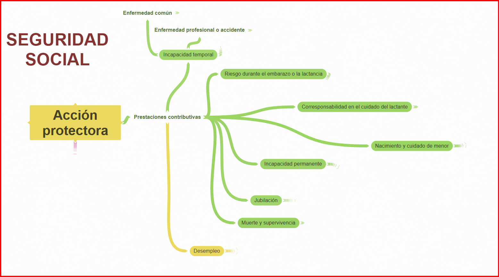

Mapa
2
Pulsa sobre las áreas o iconos activos de la imagen.
{"typeGame":"Mapa","instructions":"","showMinimize":false,"showActiveAreas":false,"author":"","url":"resources/Captura_de_pantalla_2025-04-25_104355.png","authorImage":"","altImage":"","itinerary":{"showClue":false,"clueGame":"","percentageClue":40,"showCodeAccess":false,"codeAccess":"","messageCodeAccess":""},"points":[{"id":"p809763977693","title":"Prestaciones contributivas","type":4,"url":"","video":"","x":0.36231249809265137,"y":0.0418243408203125,"x1":0,"y1":0,"footer":"","author":"","alt":"","iVideo":0,"fVideo":0,"eText":"","iconType":0,"question":"Subsidio: Requiere 180 días cotizados en los últimos 5 años.","question_audio":"","toolTip":"","link":"","color":"#000000","fontSize":"14","map":{"id":"a809763977693","pts":[{"id":"p1336350900598","title":"","type":0,"url":"","video":"","x":0,"y":0,"x1":0,"y1":0,"footer":"","author":"","alt":"","iVideo":0,"fVideo":0,"eText":"","iconType":0,"question":"","question_audio":"","toolTip":"","link":"","color":"#000000","fontSize":"14","map":{"id":"a1336350900598","url":"","alt":"","author":"","pts":[]},"slides":[{"id":"s1336350900598","title":"","url":"","author":"","alt":"","footer":""}],"activeSlide":0}],"url":"","alt":"","author":"","active":0},"slides":[{"id":"s809763977693","title":"","url":"","author":"","alt":"","footer":""}],"activeSlide":0,"audio":""},{"id":"p1731067603009","title":"Prestaciones contributivas","type":4,"url":"","video":"","x":0.5285624980926513,"y":0.10779276839247695,"x1":0,"y1":0,"footer":"","author":"","alt":"","iVideo":0,"fVideo":0,"eText":"","iconType":0,"question":"No exige periodo mínimo de cotización.","question_audio":"","toolTip":"","link":"","color":"#000000","fontSize":"14","map":{"id":"a1731067603009","pts":[{"id":"p832238008533","title":"","type":0,"url":"","video":"","x":0,"y":0,"x1":0,"y1":0,"footer":"","author":"","alt":"","iVideo":0,"fVideo":0,"eText":"","iconType":0,"question":"","question_audio":"","toolTip":"","link":"","color":"#000000","fontSize":"14","map":{"id":"a832238008533","url":"","alt":"","author":"","pts":[]},"slides":[{"id":"s832238008533","title":"","url":"","author":"","alt":"","footer":""}],"activeSlide":0}],"url":"","alt":"","author":"","active":0},"slides":[{"id":"s809763977693","title":"","url":"","author":"","alt":"","footer":""}],"activeSlide":0,"audio":""},{"id":"p458951902888","title":"Prestaciones contributivas","type":4,"url":"","video":"","x":0.6873124980926514,"y":0.26770268689404736,"x1":0,"y1":0,"footer":"","author":"","alt":"","iVideo":0,"fVideo":0,"eText":"","iconType":0,"question":"Duración: hasta cese del riesgo o nacimiento (embarazo); hasta 9 meses (lactancia).","question_audio":"","toolTip":"","link":"","color":"#000000","fontSize":"14","map":{"id":"a458951902888","pts":[{"id":"p1705729092062","title":"","type":0,"url":"","video":"","x":0,"y":0,"x1":0,"y1":0,"footer":"","author":"","alt":"","iVideo":0,"fVideo":0,"eText":"","iconType":0,"question":"","question_audio":"","toolTip":"","link":"","color":"#000000","fontSize":"14","map":{"id":"a1705729092062","url":"","alt":"","author":"","pts":[]},"slides":[{"id":"s1705729092062","title":"","url":"","author":"","alt":"","footer":""}],"activeSlide":0}],"url":"","alt":"","author":"","active":0},"slides":[{"id":"s809763977693","title":"","url":"","author":"","alt":"","footer":""}],"activeSlide":0,"audio":""},{"id":"p906343393277","title":"Prestaciones contributivas","type":4,"url":"","video":"","x":0.8460624980926513,"y":0.3780630386627472,"x1":0,"y1":0,"footer":"","author":"","alt":"","iVideo":0,"fVideo":0,"eText":"","iconType":0,"question":"Reducción de jornada Requisitos: iguales que para nacimiento y cuidado del menor. Cuantía: 100% de base reguladora.","question_audio":"","toolTip":"","link":"","color":"#000000","fontSize":"14","map":{"id":"a906343393277","pts":[{"id":"p1126958018021","title":"","type":0,"url":"","video":"","x":0,"y":0,"x1":0,"y1":0,"footer":"","author":"","alt":"","iVideo":0,"fVideo":0,"eText":"","iconType":0,"question":"","question_audio":"","toolTip":"","link":"","color":"#000000","fontSize":"14","map":{"id":"a1126958018021","url":"","alt":"","author":"","pts":[]},"slides":[{"id":"s1126958018021","title":"","url":"","author":"","alt":"","footer":""}],"activeSlide":0}],"url":"","alt":"","author":"","active":0},"slides":[{"id":"s809763977693","title":"","url":"","author":"","alt":"","footer":""}],"activeSlide":0,"audio":""},{"id":"p1501494485094","title":"Prestaciones contributivas","type":4,"url":"","video":"","x":0.9310624980926514,"y":0.5199549563296206,"x1":0,"y1":0,"footer":"","author":"","alt":"","iVideo":0,"fVideo":0,"eText":"","iconType":0,"question":"Adopción o acogida Menor de 6 años (18 con discapacidad).","question_audio":"","toolTip":"","link":"","color":"#000000","fontSize":"14","map":{"id":"a1501494485094","pts":[{"id":"p32712313336","title":"","type":0,"url":"","video":"","x":0,"y":0,"x1":0,"y1":0,"footer":"","author":"","alt":"","iVideo":0,"fVideo":0,"eText":"","iconType":0,"question":"","question_audio":"","toolTip":"","link":"","color":"#000000","fontSize":"14","map":{"id":"a32712313336","url":"","alt":"","author":"","pts":[]},"slides":[{"id":"s32712313336","title":"","url":"","author":"","alt":"","footer":""}],"activeSlide":0}],"url":"","alt":"","author":"","active":0},"slides":[{"id":"s809763977693","title":"","url":"","author":"","alt":"","footer":""}],"activeSlide":0,"audio":""},{"id":"p497941041704","title":"Prestaciones contributivas","type":4,"url":"","video":"","x":0.6785624980926513,"y":0.5920270284016927,"x1":0,"y1":0,"footer":"","author":"","alt":"","iVideo":0,"fVideo":0,"eText":"","iconType":0,"question":"Tipos: parcial, total, absoluta, gran invalidez. Prestación económica variable.","question_audio":"","toolTip":"","link":"","color":"#000000","fontSize":"14","map":{"id":"a497941041704","pts":[{"id":"p871477129211","title":"","type":0,"url":"","video":"","x":0,"y":0,"x1":0,"y1":0,"footer":"","author":"","alt":"","iVideo":0,"fVideo":0,"eText":"","iconType":0,"question":"","question_audio":"","toolTip":"","link":"","color":"#000000","fontSize":"14","map":{"id":"a871477129211","url":"","alt":"","author":"","pts":[]},"slides":[{"id":"s871477129211","title":"","url":"","author":"","alt":"","footer":""}],"activeSlide":0}],"url":"","alt":"","author":"","active":0},"slides":[{"id":"s809763977693","title":"","url":"","author":"","alt":"","footer":""}],"activeSlide":0,"audio":""},{"id":"p1113110693840","title":"Prestaciones contributivas","type":4,"url":"","video":"","x":0.5985624980926514,"y":0.722657652588578,"x1":0,"y1":0,"footer":"","author":"","alt":"","iVideo":0,"fVideo":0,"eText":"","iconType":0,"question":"Pensión vitalicia.","question_audio":"","toolTip":"","link":"","color":"#000000","fontSize":"14","map":{"id":"a1113110693840","pts":[{"id":"p814349411647","title":"","type":0,"url":"","video":"","x":0,"y":0,"x1":0,"y1":0,"footer":"","author":"","alt":"","iVideo":0,"fVideo":0,"eText":"","iconType":0,"question":"","question_audio":"","toolTip":"","link":"","color":"#000000","fontSize":"14","map":{"id":"a814349411647","url":"","alt":"","author":"","pts":[]},"slides":[{"id":"s814349411647","title":"","url":"","author":"","alt":"","footer":""}],"activeSlide":0}],"url":"","alt":"","author":"","active":0},"slides":[{"id":"s809763977693","title":"","url":"","author":"","alt":"","footer":""}],"activeSlide":0,"audio":""},{"id":"p645412275070","title":"Prestaciones contributivas","type":4,"url":"","video":"","x":0.6248124980926514,"y":0.805337871517147,"x1":0,"y1":0,"footer":"","author":"","alt":"","iVideo":0,"fVideo":0,"eText":"","iconType":0,"question":"Indemnización, pensión vitalicia/temporal, subsidios.","question_audio":"","toolTip":"","link":"","color":"#000000","fontSize":"14","map":{"id":"a645412275070","pts":[{"id":"p848806146688","title":"","type":0,"url":"","video":"","x":0,"y":0,"x1":0,"y1":0,"footer":"","author":"","alt":"","iVideo":0,"fVideo":0,"eText":"","iconType":0,"question":"","question_audio":"","toolTip":"","link":"","color":"#000000","fontSize":"14","map":{"id":"a848806146688","url":"","alt":"","author":"","pts":[]},"slides":[{"id":"s848806146688","title":"","url":"","author":"","alt":"","footer":""}],"activeSlide":0}],"url":"","alt":"","author":"","active":0},"slides":[{"id":"s809763977693","title":"","url":"","author":"","alt":"","footer":""}],"activeSlide":0,"audio":""},{"id":"p1477861495373","title":"Prestaciones contributivas","type":4,"url":"","video":"","x":0.4785624980926514,"y":0.9073423437170081,"x1":0,"y1":0,"footer":"","author":"","alt":"","iVideo":0,"fVideo":0,"eText":"","iconType":0,"question":"Duración en función del periodo de carencia. Límites máximos y mínimos.","question_audio":"","toolTip":"","link":"","color":"#000000","fontSize":"14","map":{"id":"a1477861495373","pts":[{"id":"p1044101584309","title":"","type":0,"url":"","video":"","x":0,"y":0,"x1":0,"y1":0,"footer":"","author":"","alt":"","iVideo":0,"fVideo":0,"eText":"","iconType":0,"question":"","question_audio":"","toolTip":"","link":"","color":"#000000","fontSize":"14","map":{"id":"a1044101584309","url":"","alt":"","author":"","pts":[]},"slides":[{"id":"s1044101584309","title":"","url":"","author":"","alt":"","footer":""}],"activeSlide":0}],"url":"","alt":"","author":"","active":0},"slides":[{"id":"s809763977693","title":"","url":"","author":"","alt":"","footer":""}],"activeSlide":0,"audio":""}],"isScorm":0,"textButtonScorm":"Guardar la puntuación","repeatActivity":false,"textAfter":"","evaluation":2,"selectsGame":[{"typeSelect":0,"numberOptions":4,"quextion":"","options":["","","",""],"solution":"","solutionWord":"","percentageShow":35,"msgError":"","msgHit":""}],"isNavigable":true,"showSolution":true,"timeShowSolution":1,"version":2,"percentajeIdentify":100,"percentajeShowQ":100,"percentajeQuestions":100,"autoShow":false,"autoAudio":true,"optionsNumber":0,"evaluationF":true,"evaluationIDF":"SegSoc1","id":"202542584957-120","order":"","msgs":{"msgSubmit":"Enviar","msgIndicateWord":"Proporcione una palabra o expresión","msgClue":"¡Genial! La pista es:","msgErrors":"Errores","msgHits":"Aciertos","msgScore":"Puntuación","msgMinimize":"Minimizar","msgMaximize":"Maximizar","msgFullScreen":"Pantalla Completa","msgNoImage":"Pregunta sin imágenes","msgSuccesses":"¡Correcto! | ¡Excelente! | ¡Genial! | ¡Muy bien! | ¡Perfecto!","msgFailures":"¡No era eso! | ¡Incorrecto! | ¡No es correcto! | ¡Lo sentimos! | ¡Error!","msgTryAgain":"Necesita al menos un %s% de respuestas correctas para conseguir la información. Vuelva a intentarlo.","msgEndGameScore":"Antes de guardar la puntuación comience la partida.","msgScoreScorm":"La puntuación no se puede guardar porque esta página no forma parte de un paquete SCORM.","msgPoint":"Punto","msgAnswer":"Responder","msgOnlySaveScore":"¡Sólo puede guardar la puntuación una vez!","msgOnlySave":"Sólo puede guardar una vez","msgInformation":"Información","msgYouScore":"Su puntuación","msgOnlySaveAuto":"Su puntuación se guardará después de cada pregunta. Sólo puede jugar una vez.","msgSaveAuto":"Su puntuación se guardará automáticamente después de cada pregunta.","msgSeveralScore":"Puede guardar la puntuación tantas veces como quiera","msgYouLastScore":"La última puntuación guardada es","msgActityComply":"Ya ha realizado esta actividad.","msgPlaySeveralTimes":"Puede realizar esta actividad cuantas veces quiera","msgClose":"Cerrar","msgPoints":"puntos","msgPointsA":"Puntos","msgQuestions":"Preguntas","msgAudio":"Audio","msgAccept":"Aceptar","msgYes":"Sí","msgNo":"No","msgShowAreas":"Mostrar áreas activas","msgShowTest":"Mostrar cuestionario","msgGoActivity":"Pulsa aquí para realizar esta actividad","msgSelectAnswers":"Selecciona las opciones correctas y pulsa sobre el botón 'Responder'.","msgCheksOptions":"Marca todas las opciones en el orden adecuado y pulsa sobre el botón 'Responder'.","msgWriteAnswer":"Escribe la palabra o expresión correcta y pulsa en el botón 'Responder'.","msgIdentify":"Identifica","msgSearch":"Buscar","msgClickOn":"Pulsa sobre","msgReviewContents":"Debes repasar el %s% de los contenidos de la actividad antes de completar el cuestionario.","msgScore10":"¡Todo perfecto! ¡Enhorabuena! ¿Deseas repetir esta actividad?","msgScore4":"No has superado esta prueba. Repasa sus contenidos e inténtalo de nuevo. ¿Deseas repetir la actividad?","msgScore6":"¡Estupendo! Has superado la prueba, pero seguro que lo puedes mejorar. ¿Deseas repetir esta actividad?","msgScore8":"¡Casi perfecto! Aún lo puedes hacer mejor. ¿Deseas repetir esta actividad?","msgNotCorrect":"¡No es correcto! Has pulsado sobre","msgNotCorrect1":"¡No es correcto! Has pulsado sobre","msgNotCorrect2":"y la respuesta correcta es","msgNotCorrect3":"¡Prueba otra vez!","msgAllVisited":"¡Genial! Has visitado los puntos necesarios.","msgCompleteTest":"Puedes completar el cuestionario.","msgPlayStart":"Pulse aquí para empezar","msgSubtitles":"Subtítulos","msgSelectSubtitles":"Selecciona un archivo de subtítulos. Formatos válidos:","msgNumQuestions":"Número de preguntas","msgHome":"Inicio","msgReturn":"Volver","msgCheck":"Comprobar","msgUncompletedActivity":"Actividad no completada","msgSuccessfulActivity":"Actividad superada. Puntuación: %s","msgUnsuccessfulActivity":"Actividad no superada. Puntuación: %s","msgTypeGame":"Mapa"}}
Su navegador no es compatible con esta herramienta.